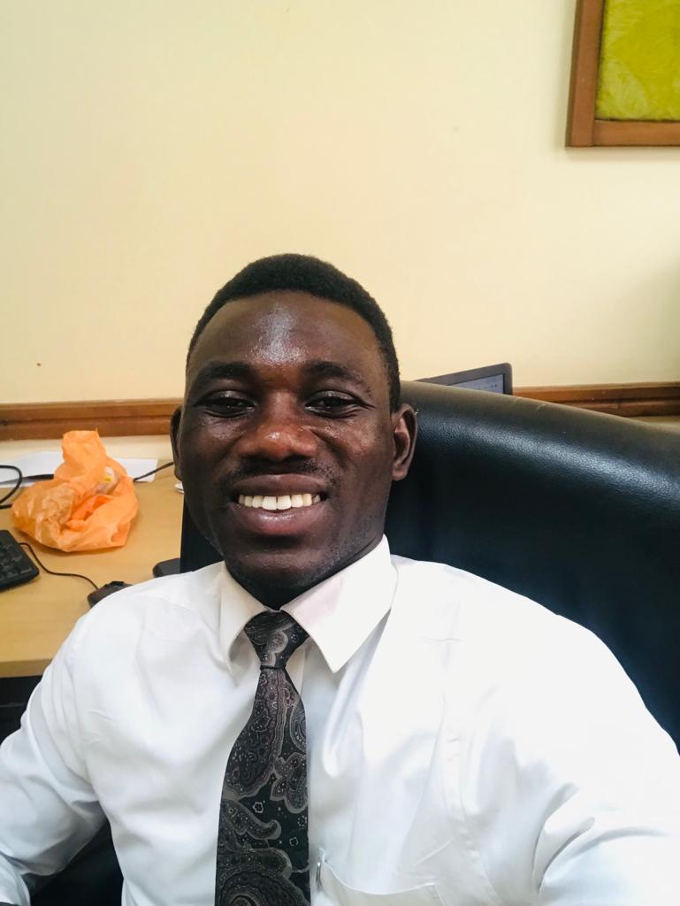

Isaac Omano Ninson | WDD 130

Hello!!! My name is Isaac Omano Ninson. I am from Ghana, and I am a student of BYU-Idaho. This Semester I am learning Web Fundermental (WWD 130)

Hello!!! My name is Isaac Omano Ninson. I am from Ghana, and I am a student of BYU-Idaho. This Semester I am learning Web Fundermental (WWD 130)